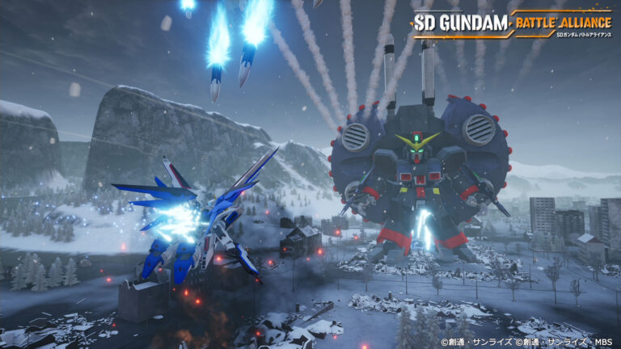
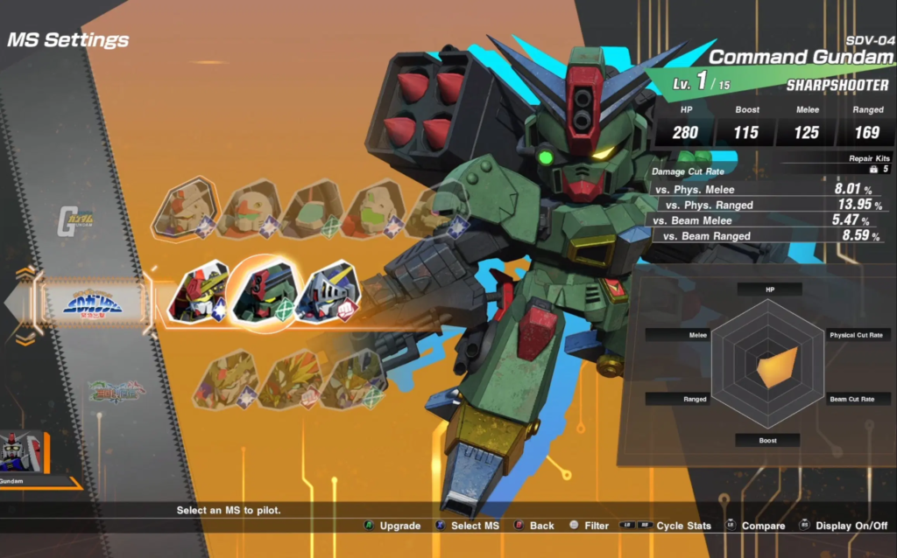
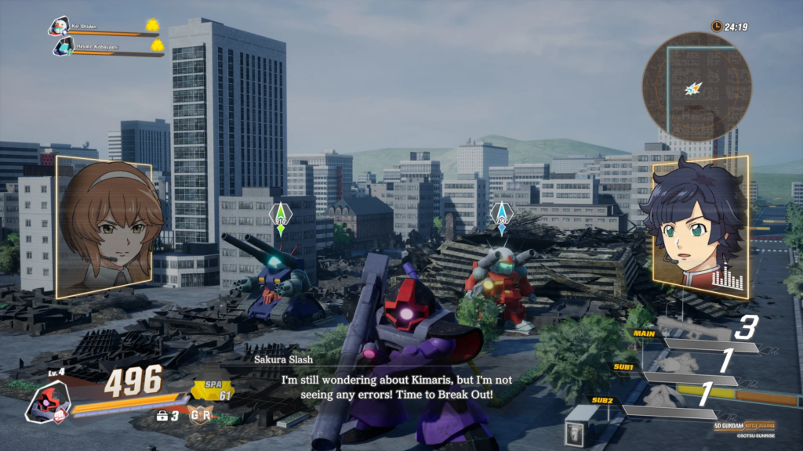
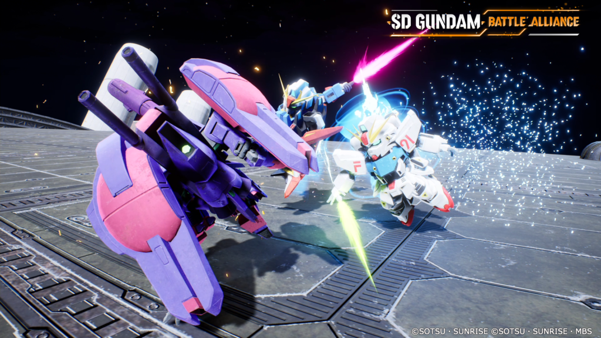
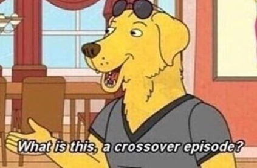

SD GUNDAM BATTLE ALLIANCE | REVIEW
“¿Acaso estamos en un episodio de crossover?”
El 25 de agosto del presente mes Artdink y Bandai Namco se enorgullecen de presentar su último desarrollo: SD Gundam Battle Alliance, una novedad para algunos, una bendición para los no pocos fanáticos que tienen devoción por la magnifica obra de arte que supone el animé Gundam Wing. La presente review fue realizada gracias a un código de prensa otorgado por la publicadora.
SD Gundam es un juego hack-and-slash y ARPG en tercera persona de simpáticos Mobile Suit (o robotitos para los herejes) modelados al estilo chibi con mecánicas clásicas y controles altamente intuitivos en donde deberemos como piloto de mechas arrasar oleadas de robots enemigos con un sinfín de técnicas y armas. Se puede jugar tanto con teclado como con joystick y tiene un modo multiplayer, pero estando organizados los servers por plataformas, es decir, sin crossplay
Definitivamente es un crossover…
Dentro del contexto del juego, el jugador encarnará las hábiles manos del “Comandante” (a secas) que junto a una Inteligencia Artificial llamada Sakura, una audaz programadora a nuestras órdenes y a un tierno mini-robot tienen la misión de restaurar una quebradura en el espacio-tiempo que hacen que los múltiples universos de Gundam Wing (26 para ser exactos) se entremezclen y sus distintos personajes sean ubicados en el momento y lugar erróneos.
Para lograr dicho objetivo, se deberá explorar la “Dimension G” para ubicar dichas fallas identificadas como eventos “Break” para así desbloquear la misión histórica que permite reubicar a los actores en sus lugares correspondientes y así resolver la fisura para mantener el orden de la realidad.
En el transcurso nos hallaremos no solo en épicas y reconocidas batallas, sino que nos encontraremos en el campo con personajes icónicos de la serie como Amuro Ray o Mika y además con otros pilotos de esta dimensión (no estamos solos) que intentarán frustrar nuestros intentos.
Un clásico que nunca falla
El género hack-and-slash realmente no muere nunca, resultando siempre divertido pasar por dichas experiencias. Como se comentaba anteriormente, el juego trata de ir desbloqueando los eventos Break y Story para poder ir avanzando en la trama, obteniendo como premios planos de Gundams, puntos de experiencia para nuestros pilotos y créditos para aumentar las 6 estadísticas que componen a nuestro robotito.
El plato fuerte de progresar es que a medida que se ganan batallas se desbloquearán nuevos Gundams organizados por los distintos universos de la serie, pudiendo controlar desde mechas clásicamente enemigos hasta los más reconocibles del animé, resaltando claramente los de los protagonistas principales. Cada mecha tiene sus propias armas, estilo de lucha, animaciones, estadísticas y especializaciones (a distancia, melé o balanceados… ¡bah!) por lo que se dispondrá de una amplia selección para tanto ganar batallas como poder controlar a nuestro MS favorito.
En cada escenario se deberán derrotar una serie de enemigos “débiles” para poder acceder a la “batalla final” con un adversario (en primera instancia) erróneo según historia, para luego poder en un nuevo encuentro encarar al enemigo original. Pero no necesariamente tenemos que luchar solos, ya que podremos contar con la asistencia de otros dos pilotos que no solo nos ayudarán en combate, sino que podrán rescatarnos si nos han derrotado para poder regresar a la lucha. Estos mismos pueden ser genéricos, como así también acceder a los personajes que hemos ayudado a reubicar a través de las misiones con sus propios MS.
Los controles son básicos e intuitivos: ataque melé ligero y fuerte, un arma a distancia principal y dos armas especiales. A medida que se conectan ataques y combos se llenará un contador a modo de “carga” que una vez completo habilitará un poderoso ataque “Ultimate”. Para poder evitar los ataques se cuenta con un escudo protector que habilita un contrataque si se coordina bien, un botón de salto (que también sirve para encadenar ataques aéreos) y un dash.
Un desarrollo altamente canon y fiel
La estética de los distintos robots son lo mas destacable de esta entrega ya que cada Gundam, aunque esté diseñado con un estilo chibi, está confeccionado con un grado de detalle muy minucioso y con un claro cariño y respeto hacia la serie. Los movimientos y ataques canon de cada personaje están asimismo presentes, lo cual hace que se sienta que se es parte del animé.
Durante los interludios, la trama se desarrolla en una pantalla 2D mediante diálogos con los tripulantes de la nave al mejor modo cartoon, funcionando más para otorgar un mínimo contexto y un relleno necesario que como algo relevante del juego… aunque a los fanáticos del género más que seguro le arrancará una sonrisa en algún momento.
La confección de los escenarios no es nada impresionante, siendo presentado solo como un espacio de batalla más que como un espectáculo visual (aunque no por ello sea terrible): está pensado como un medio y no como un fin, otorgando el protagonismo enteramente al combate y la acción… pero el apartado auditivo es cosa de otro cantar: Son muy disfrutables los temazos, los efectos de audio, los sonidos de ataque, entre otros, teniendo un diseño cuidado, pulido y limpio, repleto de música electrónica y “pesada” a veces que enmarcan perfectamente la emoción del momento en que nos encontramos.
SD Gundam Battle Alliance está disponible en las tiendas de Steam (PC), Playstation, Nintendo Switch y Xbox.
